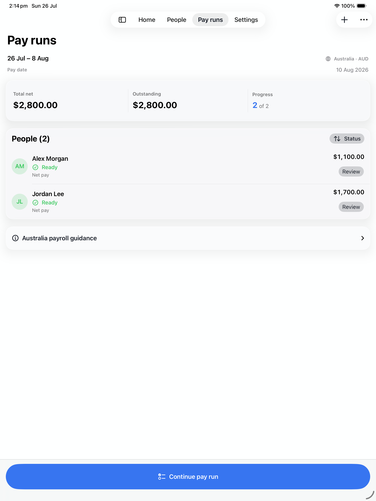
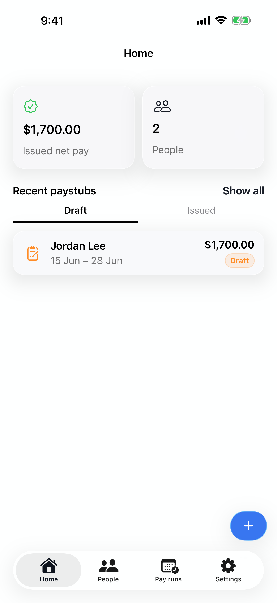
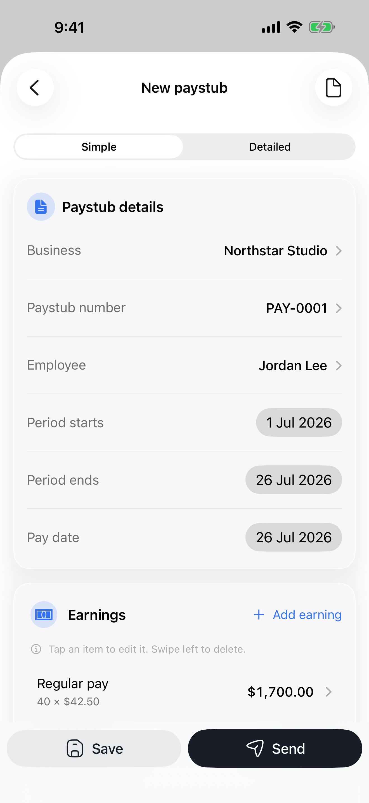
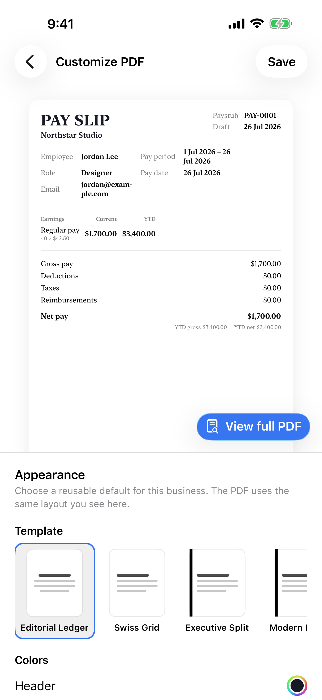
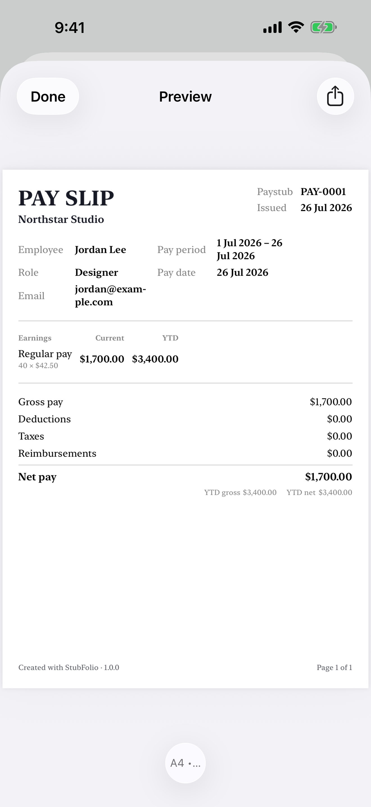
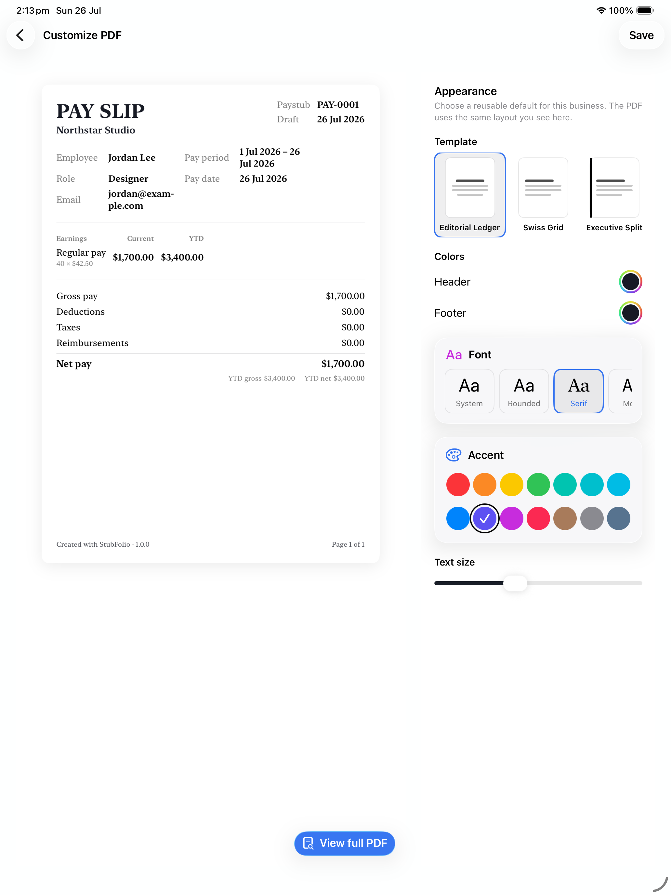

Guided paystub maker
Move from pay details to a professional PDF with a clear, focused flow.
Paystub maker for iPhone and iPad
StubFolio is a guided paystub maker for iPhone and iPad. Create, customise, preview, and share polished pay stub PDFs without wrestling with full payroll software.
Designed for iPhone and iPad. No separate account required.


Move from pay details to a professional PDF with a clear, focused flow.
Save people, pay rates, and recurring lines so the next paystub starts ahead.
Prepare a payday for multiple people and review each record before issuing.
Choose a polished template, accent, type style, and A4 or US Letter output.
Create without a connection, then use private iCloud sync when you choose.
Guided and intuitive
Start with the essentials: business, person, pay period, earnings, deductions, and pay date. StubFolio keeps each step clear, so you can create a professional paystub without learning a payroll system.



Reusable people and pay details
Keep employee or contractor details, pay rates, and recurring earnings or deductions ready for the next record. History stays intact while new paystubs start with the right context.
Explore team pay runsPayday for more than one person
Add people to a pay run, review net amounts, track which records are ready, and work through exceptions before issuing. It is a calmer way to prepare multiple paystubs without losing the details.

Customisable PDF layouts
Choose from structured templates, set your colours and type style, and preview the real document before export. Every payslip is designed to be easy to read, print, and share.
Private, offline, and in sync
StubFolio is local-first. Create without a connection, then use private iCloud sync across your Apple devices when you choose.
Create and review paystubs without an internet connection.
Keep your records available across your own Apple devices.
Preview the finished PDF, then export it through the system share sheet.
Frequently asked questions
What to know about creating, storing, and sharing pay stub PDFs with StubFolio.
Yes. Core paystub creation works offline. If you enable iCloud, your records can sync when your device is connected again.
You can prepare professional pay stub and payslip PDFs for A4 or US Letter paper, with print-safe layouts designed for sharing and printing.
No. StubFolio helps you structure, review, and present the figures you enter. It is not a tax-filing service and does not replace professional payroll or tax advice.
Yes. StubFolio is designed for iPhone and iPad, with layouts that make quick edits comfortable on iPhone and detailed review easier on iPad.
StubFolio is local-first. Your work stays on your device, with private iCloud sync available when you enable it through your Apple account.